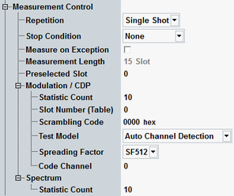

The "Measurement Control" parameters configure the scope of the WCDMA NodeB TX measurement.
See also: "Statistical Settings"

Defines how often the measurement is repeated if it is not stopped explicitly or by a failed limit check.
- Continuous: The measurement is continued until it is explicitly terminated. The results are periodically updated.
- Single-Shot: The measurement is stopped after one statistics cycle.
Single-shot is preferable if only a single measurement result is required under fixed conditions, which is typical for remote-controlled measurements. Continuous mode is suitable for monitoring the evolution of the measurement results in time and observe how they depend on the measurement configuration, which is typically done in manual control. The reset/preset values therefore differ from each other.
- "None": The measurement is performed according to its "Repetition" mode and "Statistic Count", irrespective of the limit check results.
- "On Limit Failure": The measurement is stopped when one of the limits is exceeded, irrespective of the repetition mode set. If no limit failure occurs, it is performed according to its "Repetition" mode and "Statistic Count". Use this setting for measurements that are intended for checking limits, e.g. production tests.
Specifies whether measurement results that the R&S CMW identifies as faulty or inaccurate are rejected. A faulty result occurs, for example, when an overload is detected. In remote control, the cause of the error is indicated by the "reliability indicator".
- Off: Faulty results are rejected. The measurement is continued. The statistical counters are not reset. Use this mode to ensure that a single faulty result does not affect the entire measurement.
- On: Results are never rejected. Use this mode for development purposes, if you want to analyze the reason for occasional wrong transmissions.
Defines the number of consecutive slots that form a single measurement interval. The measured slots are displayed in all multislot diagrams, e.g. error vector magnitude and NodeB power. The current SW version supports only the fixed length of 15 slots.
See also "Defining the Scope of the Measurement"
Remote command:Selects the slot to be used for all single slot measurements, e.g. error vector magnitude vs chip, CD monitor, ACLR, emission mask. Do not confuse the preselected slot with the slot used for tables of statistical values for multislot measurements, see parameter "Slot Number (Table)".
See also "Defining the Scope of the Measurement"
Remote command:Controls modulation and code domain measurements.
Defines the number of measurement intervals per measurement cycle (statistics cycle, single-shot measurement). This value is also relevant for continuous measurements, because the averaging procedures depend on the statistic count.
In the WCDMA NodeB TX measurement, the measurement interval is completed when the R&S CMW has measured the full sequence of "Measured Slots". The measurement provides two independent statistic lengths for the modulation and spectrum results. In single-shot mode and with a shorter spectrum statistic length, the ACLR evaluation is stopped while the R&S CMW still continues providing new modulation results.
See also: "Statistical Results"
Selects a particular slot within the "Measurement Length" where the R&S CMW displays a table of statistical measurement results for the multislot measurements. These results are measured for all slots and can be displayed for one slot at a time.
See also "Defining the Scope of the Measurement".
Remote command:Specifies the setup of physical channels for various transmitter tests according to 3GPP TS 25.141, section 6.1.1.
Remote command:Selects the spreading factor used for display of the code domain monitor results in the CDE view. For the specification, see 3GPP TS 25.141.
Remote command:Specifies the code channel to be measured in CDP vs slot and CDE vs slot measurements.
Remote command:Controls spectrum measurements.